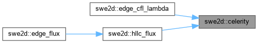
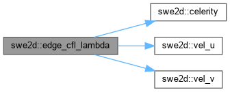
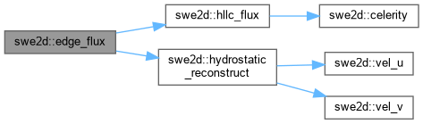
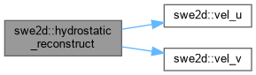
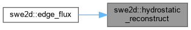
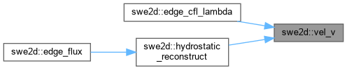

- Generated on Mon Jun 22 2026 19:54:00 for HYDRA 2D GPU — C++/CUDA by
 1.9.8
1.9.8
|
HYDRA 2D GPU — C++/CUDA 2.0
GPU-Accelerated 2D Shallow Water Equation Solver
|
Classes | |
| struct | GhostState |
| struct | HLLCFlux |
| struct | ReconstructedStates |
Functions | |
| __host__ double | vel_u (double hu, double h, double h_min) |
| Compute x-velocity from momentum and depth. Zero below h_min. | |
| __host__ double | vel_v (double hv, double h, double h_min) |
| Compute y-velocity from momentum and depth. | |
| __host__ double | celerity (double h, double g) |
| Wave speed (celerity) = sqrt(g*h). Zero for dry cells. | |
| __host__ ReconstructedStates | hydrostatic_reconstruct (double hL, double huL, double hvL, double zbL, double hR, double huR, double hvR, double zbR, double h_min) |
| __host__ HLLCFlux | hllc_flux (double hL, double uL, double vL, double hR, double uR, double vR, double nx, double ny, double g, double h_min) |
| __host__ HLLCFlux | edge_flux (double hL, double huL, double hvL, double zbL, double hR, double huR, double hvR, double zbR, double nx, double ny, double g, double h_min, double &zb_face_out) |
| __host__ void | bed_slope_correction (double hL, double hL_star, double nx, double ny, double g, double &corr_hu, double &corr_hv) |
| __host__ void | apply_friction (double &h, double &hu, double &hv, double dt, double n_mann, double g, double h_min, double k_mann=1.0, bool shallow_correction=false, double depth_alpha=5.0, double exponent=0.4) |
| __host__ int | friction_substep_count (double h, double hu, double hv, double dt, double n_mann, double g, double h_min, double k_mann, bool substep_enabled, double target_courant, int max_substeps) |
| __host__ void | apply_friction_substepped (double &h, double &hu, double &hv, double dt, double n_mann, double g, double h_min, double k_mann, bool substep_enabled, double target_courant, int max_substeps, bool shallow_correction=false, double depth_alpha=5.0, double exponent=0.4) |
| __host__ double | edge_cfl_lambda (double hL, double huL, double hvL, double hR, double huR, double hvR, double nx, double ny, double edge_len, double cell_area_L, double cell_area_R, double g, double h_min) |
| __host__ GhostState | make_ghost (double hI, double huI, double hvI, double zbI, double nx, double ny, int bc_type, double bc_val, double h_min, double n_mann) |
Variables | |
| static constexpr double | G_DEFAULT = 9.81 |
| static constexpr double | H_MIN = 1.0e-6 |
| static constexpr double | CFL_DEFAULT = 0.45 |
|
inline |
Semi-implicit Manning friction source term. Applies Manning friction after flux update to prevent velocity reversal in shallow cells. Uses semi-implicit form: u^{n+1}=u^n/(1+dt*Cf*|u|/h). Optional shallow-flow correction enhances Cf when the log boundary layer fills a significant fraction of the water column.
| h | [in/out] Depth |
| hu | [in/out] x-momentum |
| hv | [in/out] y-momentum |
| dt | Timestep |
| n_mann | Manning's n |
| g | Gravity |
| h_min | Wet/dry threshold |
| k_mann | Manning unit factor |
| shallow_correction | Enable Cf enhancement |
| depth_alpha | Reference depth coefficient |
| exponent | Cf enhancement exponent |
|
inline |
Apply Manning friction with adaptive sub-stepping for temporal-order hardening. Subdivides dt into N substeps when the friction Courant number exceeds the target threshold.
| h | [in/out] Depth |
| hu | [in/out] x-momentum |
| hv | [in/out] y-momentum |
| dt | Timestep |
| n_mann | Manning's n |
| g | Gravity |
| h_min | Wet/dry |
| k_mann | Manning unit factor |
| substep_enabled | Enable sub-stepping |
| target_courant | Target friction Courant |
| max_substeps | Cap on substeps |
| shallow_correction | Enable Cf enhancement |
| depth_alpha | Ref depth coeff |
| exponent | Cf enhancement exponent |
|
inline |
Well-balanced bed-slope pressure correction for momentum. Adds hydrostatic correction to flux accumulators to cancel the pressure term and preserve lake-at-rest.
| hL | Original depth |
| hL_star | Starred depth from hydrostatic reconstruction |
| nx | Edge normal x |
| ny | Edge normal y |
| g | Gravity |
| corr_hu | [in/out] hu correction |
| corr_hv | [in/out] hv correction |
|
inline |
Wave speed (celerity) = sqrt(g*h). Zero for dry cells.

|
inline |
CFL characteristic speed per edge. Returns the maximum characteristic speed / effective cell size (s^{-1}). Global dt = CFL / max(lambda).
| hL | Left depth |
| huL | Left x-momentum |
| hvL | Left y-momentum |
| hR | Right depth |
| huR | Right x-momentum |
| hvR | Right y-momentum |
| nx | Edge normal x |
| ny | Edge normal y |
| edge_len | Edge length |
| cell_area_L | Left cell area |
| cell_area_R | Right cell area |
| g | Gravity |
| h_min | Wet/dry threshold |

|
inline |
Combined hydrostatic reconstruction + HLLC flux for a single edge. Returns the HLLC flux and outputs the face bed elevation for the bed-slope correction.
| zb_face_out | [out] Max bed elev at interface |

|
inline |
Compute the number of friction sub-steps for adaptive temporal accuracy. Returns 1 when sub-stepping is disabled or the friction Courant number is below the target threshold.
| h | Depth |
| hu | x-momentum |
| hv | y-momentum |
| dt | Timestep |
| n_mann | Manning's n |
| g | Gravity |
| h_min | Wet/dry threshold |
| k_mann | Manning unit factor |
| substep_enabled | Enable sub-stepping |
| target_courant | Target friction Courant number |
| max_substeps | Maximum allowed substeps |
|
inline |
HLLC Riemann solver for the 2D shallow-water equations. Computes normal fluxes (mass, x-momentum, y-momentum) across an edge using the HLLC approximate Riemann solver with Einfeldt wave-speed bounds. Convention: normal (nx, ny) points from left cell outward.
| hL | Left depth |
| uL | Left x-velocity |
| vL | Left y-velocity |
| hR | Right depth |
| uR | Right x-velocity |
| vR | Right y-velocity |
| nx | Edge normal x |
| ny | Edge normal y |
| g | Gravity |
| h_min | Wet/dry threshold |
|
inline |
Well-balanced hydrostatic reconstruction of interface states. Decomposes left/right cell states into starred depths that preserve lake-at-rest to machine precision.
| hL | Left depth |
| huL | Left x-momentum |
| hvL | Left y-momentum |
| zbL | Left bed |
| hR | Right depth |
| huR | Right x-momentum |
| hvR | Right y-momentum |
| zbR | Right bed |
| h_min | Wet/dry threshold |


|
inline |
Construct a ghost cell state for boundary edges. Used by both CPU and GPU flux loops to handle BCs without branching on cell type. Supports WALL, INFLOW_Q, STAGE, OPEN, REFLECT, NORMAL_DEPTH, and NORMAL_DEPTH_SLOPE boundary types.
| hI | Interior depth |
| huI | Interior x-momentum |
| hvI | Interior y-momentum |
| zbI | Interior bed |
| nx | Outward normal x |
| ny | Outward normal y |
| bc_type | Boundary condition type (1-7) |
| bc_val | Prescribed BC value |
| h_min | Wet/dry threshold |
| n_mann | Manning's n (for normal depth) |
|
inline |
Compute x-velocity from momentum and depth. Zero below h_min.
|
inline |
Compute y-velocity from momentum and depth.

|
staticconstexpr |
|
staticconstexpr |
|
staticconstexpr |